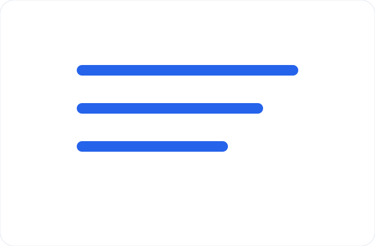

Strategy
What should a service website brief include?
A practical brief keeps project scope, content decisions, and launch priorities aligned from day one.
Blog
Strategy
A practical brief keeps project scope, content decisions, and launch priorities aligned from day one.
Strategy
A practical brief keeps project scope, content decisions, and launch priorities aligned from day one.
Development
Reusable parts, sensible naming, and separated source files keep future work predictable.

Launch
Before going live, review forms, redirects, search, analytics, and key mobile flows.
Support
Early post-launch observations can shape the next round of improvements without guesswork.